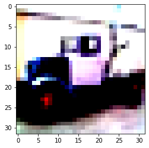

Introduction to Convolutional Neural Networks(CNNs) / Computer Vision
In this tutorial, you will learn about What are CNNs, how they work and
how to implement them in PyTorch, all explained in Simplified detail. So
lets dive right in.
Convolutional Neural Networks are used for Image Processing/Computer
Vision tasks. CNNs are easy to implement using the PyTorch modules which
we would be using throughout the Tutorial to simplify our model designing
process, so that we can focus on the problem more than the syntax.
Developed by Mr. Yann LeCunn in 1998 to identify handwritten digits, the
ConvNet has evolved much over the years to be used in self-deriving cars,
outstanding human-level intelligence. so its okay if you find things
complex for the first time, but every line of code in this tutorial is
explained from the very basics, so dont worry :) Before we get into the
Code, lets quickly understand some of the terms you should get familiar
with.
What is a Convolution?
Convolution is a simple function which refers to overlapping of two Matrices, therefore multiplying the two matrices to produce a third output matrix.
The Matrix A represents an Image and matrix B represents a Filter or Kernel which contains the weights calculated by our Neural Network, initialised randomly and are updated as the model learns in the training process.. Now what is a Kernel or a Filter?
Filter / Kernel
A Filter or Kernel is a Matrix Containing the Weights of a Neural Network, which are initialised random values. Values in the Filter Matrix are adjusted by the Neural Network at every epoch. Assume that we have some images of pizza and macaroni each. So the Filter stores the features in the Image in form of numbers like for example similar values that identify the round shape of pizza and the values that identify the similar colour, shape of macaroni. Kernel size is user defined but is calculated with respect to other factors relative to it(image size, padding, strides), later in this tutorial we will understand how to calculate the size of Kernel while building our CNN.
Strides
Now to understand strides, consider two new Matrices A1 and B1.

Now you notice when we set a Stride of 2, the Filter is applied after every 2 (columns and rows) instead of 1 like when we multiplied Matrix A and B earlier with Stride = 1. That is what Stride does. Value of Stride is user dependent and we will later in this tutorial find out how to select the value of stride for our Neural Network keeping in mind the change of other values with respect to it. A Stride of value 1 captures more information than a stride of value 2, and would be able to capture more relations between pixels of an image. So in a nutshell, Stride is basically how many rows and columns for the filter to skip at a time while applying a convolution to an image.
Why Strides?
Strides are important as in the case of Smaller Images (ex. : 32x32) we set the the Stride equal to one so that no pixel gets left out to be to be seen by our Neural Network and it can compute relations between every adjacent pixel in the image, leading to better performance of our model. Notice how the Output Matrix when we set Stride = 2 is smaller than the input Matrix and even if we would have set the Stride to 1 the shape of our Output Matrix(if stride=1, 3x3. If stride=2, 2x2) would still not have been equal to the shape of Input Matrix A1(4x4), Thats where Padding comes to the rescue.
Padding
Padding adds Zeroes at the Border of the Image Matrix. It is used when we have Important Features in our image near its edges or when the size of our image is small, so no pixel is missed out for calculating the image features. Earlier when we performed Matrix Multiplication of Matrix A (4x4) and Matrix B (2x2), the output was of the shape 2x2 despite setting the smallest stride(1), missing out the relations between the (pixels at the edge and the pixels adjacent to it) in the Image Matrix(Matrix A) which in some cases can be very useful for our neural network to find similar features in Images. Don't worry, we will learn how to Calculate the padding for any image later in this tutorial.
Max-Pooling
Max Pooling refers to selecting the Maximum out of a Pool of Values. For example: when we set the value of Max-Pool to 2(means creating a max-pool filter of size 2x2 by default, having stride = filter size = 2), for the above Matrix, it is going to select to select the maximum value for its stride value 2, Outputting the Matrix:
We use Max-Pooling for our Model to pick up the Significant(more important) features from the Image, which makes it easier for our model to identify the main features of an image(like the round shape and distribution of some topping in the image of a pizza). Max-Pooling value is also user defined according to its application. While building our model we will understand how to calculate its value.
Now that you are familiar with these terms, let put them in action. All the Code is available in the Colab Notebook, with some extra content, its advised to consider this as a code-along tutorial for better understanding when you try it yourself.
Coding our CNN
Now that we are familiar with the basic components of a CNN, lets write it in code. We are going to build a model to Classifying images belonging to 10 different classes (automobile, aeroplane, bird, cat, ..etc). We are going to train the model on the CIFAR10 dataset which contains images of these 10 classes. 5000 images of each class, therefore training our model on 50000 Images belonging to these 10 classes, so our model can identify which image is a bird or aeroplane or etc. after training, we also test our model with some images it has never seen before and see how it performs and ways to improve its performance.
Importing the required Modules, do not worry every module we imported here will be explained on-the-go as we use them to Build our Image Classifier.
import torch
import torchvision
import torch.nn as nn
from torchvision import datasets
import torchvision.transforms as transforms
import torchvision.datasets as datasets
from torch.utils.data import DataLoader
import random
import numpy
import matplotlib.pyplot as plt
import torch.nn.functional as F
from torchsummary import summary
Downloading our Data
Specifying the path where our data would be downloaded. '/data' means it
would be saved as data in our Main directory. '/' here means root
directory.
Specifying our training data as train_data, datasets.CIFAR10 here stands
for torchvisions.datasets.CIFAR10, torchvision is a library created by the
creators of PyTorch, containing very useful functions to implement
Computer Vision Neural Networks, simplifying the Process. We use the
datasets attribute of torchvision to download the CIFAR10 Dataset, to note
PyTorch has just nearly a dozen Datasets and not everytime we are going to
use this way to download our data. You can even make your own dataset.
CIFAR10 is a dataset containing of 60000 32x32 RGB images of Aeroplanes,
Automobiles, Dogs..etc. Total 10 different classes. torchvision.datasets
takes input in the form (root, train, download, transform(if any)). We
specified the root(path) as '/data' and set train=True, as we need to
download the Training Set here, download=True as we need to download it.
Now about torchvision.transforms, as the name suggests transform means to
Convert, we Convert the Images to Tensors by using the
transforms.ToTensor() attribute. It automatically converts all the images
to Float value Tensors.
We use the same method for the testing data, except we set train = False
as we need the Test Dataset(10000 Images) as test_data, train = False
fetches the Test dataset.
data_path = '/data'
train_data = datasets.CIFAR10(data_path, train = True, download = True, transform=transforms.ToTensor())
test_data = datasets.CIFAR10(data_path, train = False, download = True, transform=transforms.ToTensor())
Output: Downloading https://www.cs.toronto.edu/~kriz/cifar-10-python.tar.gz to /data/cifar-10-python.tar.gz
|||||||||||||| 170499072/? [00:02<00:00, 67888512.43it/s]
Extracting /data/cifar-10-python.tar.gz to /data
Files already downloaded and verified
Our Data has 2 Columns, one contains the image, second contains the index
of its class.
data, labels = train_data[0] is to separate the two columns from each
other into data and labels separately. Our train_data has 50000 images,
which we converted into Tensors, so to take a look at the transformed
images, we separate the data(image) and label.
train_data[0] is the first image. Our data is now in the form of a tensor,
tensors in PyTorch have an attribute .shape which returns the dimensions
of the tensor. On using data.shape it returns the dimensions of our first
image in our training data. [3, 32, 32] here shows that our image has
three channels(Red, Green, Blue) and is of the size 32x32.
data, labels = train_data[0]
data.shape
Output: torch.Size([3, 32, 32])
Next we find out the Maximum and Minimum Values in our first image, torch.min(tensor) returns the minimum value in the tensor, in the same way torch.max(tensor) returns the maximum value of the tensor. When we download the CIFAR10 Dataset from Torchvision module, it is already converted between the raneg of 0 to 1, originally the Images had pixel Values between 0 to 255 denoting the R-G-B value for each pixel.
torch.min(data)
torch.max(data)
Output: tensor(0.)
tensor(1.)
Now lets check what our Image Tensor looks like, being of the shape 3x32x32. We will understand what happens to these values after Normalization, so we visualize it before and after Normalization.
print(data)
data.shape
Output: tensor([[[0.2314, 0.1686, 0.1961, ..., 0.6196, 0.5961, 0.5804],
[0.0627, 0.0000, 0.0706, ..., 0.4824, 0.4667, 0.4784],
[0.0980, 0.0627, 0.1922, ..., 0.4627, 0.4706, 0.4275],
...,
[0.8157, 0.7882, 0.7765, ..., 0.6275, 0.2196, 0.2078],
[0.7059, 0.6784, 0.7294, ..., 0.7216, 0.3804, 0.3255],
[0.6941, 0.6588, 0.7020, ..., 0.8471, 0.5922, 0.4824]],
[[0.2431, 0.1804, 0.1882, ..., 0.5176, 0.4902, 0.4863],
[0.0784, 0.0000, 0.0314, ..., 0.3451, 0.3255, 0.3412],
[0.0941, 0.0275, 0.1059, ..., 0.3294, 0.3294, 0.2863],
...,
[0.6667, 0.6000, 0.6314, ..., 0.5216, 0.1216, 0.1333],
[0.5451, 0.4824, 0.5647, ..., 0.5804, 0.2431, 0.2078],
[0.5647, 0.5059, 0.5569, ..., 0.7216, 0.4627, 0.3608]],
[[0.2471, 0.1765, 0.1686, ..., 0.4235, 0.4000, 0.4039],
[0.0784, 0.0000, 0.0000, ..., 0.2157, 0.1961, 0.2235],
[0.0824, 0.0000, 0.0314, ..., 0.1961, 0.1961, 0.1647],
...,
[0.3765, 0.1333, 0.1020, ..., 0.2745, 0.0275, 0.0784],
[0.3765, 0.1647, 0.1176, ..., 0.3686, 0.1333, 0.1333],
[0.4549, 0.3686, 0.3412, ..., 0.5490, 0.3294, 0.2824]]])
torch.Size([3, 32, 32])
Normalizing our Data
Now talking about Normalization, it is based on the calculation:
Lets take into account the behind the scenes of Normalization. Take the
first value of the first channel of our data that we printed above(0.2314)
minus the mean of our first channel specifed below in the code block
(0.4914), then finally dividing by the standard deviation for each
channel(0.247).
(0.2314-0.4914) / (0.247)
We get -1.052631 ~ (-1.0527e+00), Now look at the first value of our
Normalized Tensor Image below, they are equal indeed. That's what
Normalization does.
Now where did these Normalization values ((0.4914, 0.4822, 0.4465) ,
(0.247, 0.243, 0.261)) came from? They have been calculated for each
channel for the whole dataset. First three are the mean values calculated
for each channel and the other three are standard deviation values for
each channel.
Why Normalize ?
We normalize the Data to get it in a certain range which is scaled for the
whole Dataset. It gets easier for our model to understand Normalized Data
rather than distributed data. Sometimes the Model would not even work on
unnormalized data as it is just too hard for our model to derive relations
on unnormalized(distributed) data than the Normalized(scaled) data. So we
have to normalize the data everytime to feed it to our Neural Network.
We use transforms.Compose when we have to apply more than one
transforms to our data.
data_path = '/data'
train_data = datasets.CIFAR10(data_path, train = True, download = True,
transform = transforms.Compose([
transforms.ToTensor(),
transforms.Normalize((0.4914, 0.4822, 0.4465), #mean for each colour channel
(0.247, 0.243, 0.261)) #standard deviation for each colour channel
]))
test_data = datasets.CIFAR10(data_path, train = False, download = True,
transform = transforms.Compose([
transforms.ToTensor(),
transforms.Normalize((0.4914, 0.4822, 0.4465), #mean for each colour channel
(0.247, 0.243, 0.261)) #standard deviation for each colour channel
]))
Output: Files already downloaded and verified
Files already downloaded and verified
Now that our data is Normalized, lets look at the transformed data. Each
Value in our image tensor has been calculated as follows:
Output[Channel] = (input[channel] - mean[channel]) / (Standard
deviation[channel])
print(data)
Output: tensor([[[-1.0527e+00, -1.3068e+00, -1.1956e+00, ..., 5.1906e-01,
4.2380e-01, 3.6029e-01],
[-1.7354e+00, -1.9895e+00, -1.7037e+00, ..., -3.6628e-02,
-1.0013e-01, -5.2505e-02],
[-1.5926e+00, -1.7354e+00, -1.2115e+00, ..., -1.1601e-01,
-8.4258e-02, -2.5890e-01],
...,
[ 1.3129e+00, 1.2018e+00, 1.1541e+00, ..., 5.5081e-01,
-1.1004e+00, -1.1480e+00],
[ 8.6835e-01, 7.5721e-01, 9.6361e-01, ..., 9.3186e-01,
-4.4942e-01, -6.7170e-01],
[ 8.2072e-01, 6.7783e-01, 8.5247e-01, ..., 1.4399e+00,
4.0792e-01, -3.6628e-02]],
[[-9.8380e-01, -1.2420e+00, -1.2097e+00, ..., 1.4587e-01,
3.2906e-02, 1.6768e-02],
[-1.6616e+00, -1.9844e+00, -1.8553e+00, ..., -5.6421e-01,
-6.4490e-01, -5.8034e-01],
[-1.5970e+00, -1.8714e+00, -1.5486e+00, ..., -6.2876e-01,
-6.2876e-01, -8.0628e-01],
...,
[ 7.5912e-01, 4.8477e-01, 6.1388e-01, ..., 1.6201e-01,
-1.4841e+00, -1.4357e+00],
[ 2.5884e-01, 6.2941e-04, 3.3953e-01, ..., 4.0408e-01,
-9.8380e-01, -1.1290e+00],
[ 3.3953e-01, 9.7458e-02, 3.0725e-01, ..., 9.8506e-01,
-8.0061e-02, -4.9965e-01]],
[[-7.6414e-01, -1.0346e+00, -1.0646e+00, ..., -8.8010e-02,
-1.7816e-01, -1.6314e-01],
[-1.4102e+00, -1.7107e+00, -1.7107e+00, ..., -8.8434e-01,
-9.5947e-01, -8.5429e-01],
[-1.3952e+00, -1.7107e+00, -1.5905e+00, ..., -9.5947e-01,
-9.5947e-01, -1.0797e+00],
...,
[-2.6831e-01, -1.1999e+00, -1.3201e+00, ..., -6.5897e-01,
-1.6056e+00, -1.4102e+00],
[-2.6831e-01, -1.0797e+00, -1.2600e+00, ..., -2.9836e-01,
-1.1999e+00, -1.1999e+00],
[ 3.2191e-02, -2.9836e-01, -4.0354e-01, ..., 3.9280e-01,
-4.4861e-01, -6.2892e-01]]])
print(torch.min(data))
print(torch.max(data))
Therefore scaling it between -1.9895 to 2.0986.
Output: tensor(-1.9895)
tensor(2.0986)
We specify the Classes list in order as specified to us by the creators of the CIFAR10 dataset. For example, since each of the image in our dataset has its own label index, An image having a label index of 6 represents that the image is a frog.
classes = ['airplane', 'automobile', 'bird', 'cat', 'deer', 'dog', 'frog', 'horse', 'ship', 'truck']
# 0 1 2 3 4 5 6 7 8 9
Now lets visualize our Data as its very important to get familiar with the
data we are going to work on.
First we generate a random number between 0 and 50000 as our train_data
has 50000 Images, each time we run this code cell, it will output a
different random image. .randint is an attribute of the module random
which takes a range(here 0 to 50000) to generate a random number.
Then we separate the image from its label so we are able to print them
separately, train_data[x] will fetch a random no. between 0 to 50000 index
in our training data.
Printing our Image tensor Size, using the .shape attribute of a tensor.
1) .imshow is an attribute of the matplotlib.pyplot(which we imported as
plt in the first cell) .imshow displays a Tensor image data as a viewable
image.
2) using .permute rearranges the Data to a different dimension. Our PIL
Image is of the dimension 3x32x32 by default which is of the form(no. of
channels X Height X Width) but plt.imshow accepts input only in the form
of (Height X Width X no. of channels). So plt.permute() rearrangesthe
dimensions to the shape 32x32x3, to be displayed properly.
3) Our label is in the form of a number between 0 to 9, so classes[label]
indexes the classes list to find the label of the current image.
4) Printing the label of the current image.
5) Printing the number of the Image taken from our train_data.
x = random.randint(0, 50000)
img, label = train_data[x]
print(img.shape)
plt.imshow(img.permute(1, 2, 0))
print(f'label : {classes[label]}')
print(f'label index : {label}')
print(f'Showing img {x}')
Output:
torch.Size([3, 32, 32])
label : truck
label index : 9
Showing img 43787

Now about DataLoaders, again as the name suggests, it loads the our data
in the form of batches automatically in our model when we call it. It also
shuffles our data so that our Model learn every feature in every class
randomly, shuffling data is also important as it also affects the
performance of our model. We load the Data in small batches so that our
model can update its parameters more frequently and increase its accuracy.
torch.utils.data.DataLoader makes feeding Data to our Model very simple.
train_loader = DataLoader(train_data, batch_size=32, shuffle=True)
test_loader = DataLoader(test_data, batch_size=32, shuffle=False)
Checking that our train_data and test_data have been Normalized and converted to tensors, making the data finally ready to fit into our Model.
train_data
Output: Dataset CIFAR10
Number of datapoints: 50000
Root location: /data
Split: Train
StandardTransform
Transform: Compose(
ToTensor()
Normalize(mean=(0.4914, 0.4822, 0.4465), std=(0.247, 0.243, 0.261))
)
test_data
Output: Dataset CIFAR10
Number of datapoints: 10000
Root location: /data
Split: Test
StandardTransform
Transform: Compose(
ToTensor()
Normalize(mean=(0.4914, 0.4822, 0.4465), std=(0.247, 0.243, 0.261))
)
train_data.classes
Output: ['airplane',
'automobile',
'bird',
'cat',
'deer',
'dog',
'frog',
'horse',
'ship',
'truck']
What does a Conv2d(Convolution) Layer with ReLU Activation and Max-Pooling actually do?
As we know that a Convolution layer uses a Filter or Kernel over our image
pixels and calculates its weights and biases to remember the features it
learned.
nn.Conv2d refers to torch.nn.module.Conv2d which is a component of the
torch.nn.module which automatically creates a convolution layer which
calculates the features in a image andf store in its wieghts and biases by
passing a Filter(Kernel) over the Image, which decides the values of
learned data. Let us make a Sample Convolution layer to see what the
outputs are.
Creating a random tensor of dimension (32, 3, 32, 32) in which implies a
batch of 32 images of size 3x32x32 as our conv and maxpool layers only
accepts input of the form(batch_size x n_channels x height x width)
conv2d = nn.Conv2d(3, 16, kernel_size=3, stride=1, padding=1)
input = torch.randn(32, 3, 32, 32)
output = conv2d(input)
input #input which we feed to the nn.Conv2d layer
Output: tensor([[[[ 7.9605e-01, -1.1775e+00, -8.2591e-01, ..., -4.1979e-01,
1.6742e+00, 4.3205e-01],
[-1.5446e+00, 1.1086e+00, -1.6327e+00, ..., 1.8382e+00,
1.4605e-01, -2.1754e-01],
[-6.1377e-02, 5.4000e-01, 4.8602e-01, ..., 8.3871e-01,
2.3568e-01, 2.3282e-01],
...
[ 6.3326e-03, -1.0194e+00, 3.4315e-01, ..., -3.8935e-01,
3.6385e-01, -1.4025e+00],
[-4.8247e-01, -1.3731e-01, -1.1399e+00, ..., -2.2768e-01,
1.1705e-02, -1.6666e-01],
[-4.9752e-01, 1.3799e+00, -9.2188e-02, ..., -9.2612e-01,
2.8137e-01, -1.1851e+00]]]])
output #output given by Conv2d(Convolution layer)
Ouput: tensor([[[[-2.1899e-01, 2.0176e-01, -3.5525e-01, ..., 2.3072e-01,
-7.2502e-01, -4.3718e-01],
[ 2.3944e-01, -2.3340e-01, 9.8247e-01, ..., -6.4163e-01,
-9.2188e-02, 1.9964e-01],
[-4.7891e-01, 2.1770e-01, -7.9173e-02, ..., -3.6187e-01,
-7.6260e-01, 3.2314e-01],
...
[-1.1326e+00, -2.9806e-01, 7.9218e-01, ..., -2.3414e-01,
1.6935e-01, -1.7616e-01],
[ 1.0379e-01, -5.2458e-01, 5.1602e-01, ..., 3.4030e-01,
3.9474e-01, -2.4401e-01],
[ 5.4340e-01, 4.2319e-01, 3.4418e-01, ..., -4.0162e-01,
-1.9511e-01, -2.0459e-01]]]], grad_fn=MkldnnConvolutionBackward0)
Now moving on to Activation, we use activations in between the input and
output to decide if a Neuron will 'activate' or not. Neuron refers to the
component of our Model(Neural Network) which is a single value when passed
through the Neural Network/a part of it. Activation functions therefore
actually decide which information to considered by our Neural Network.
Activation functions also add non-linearity to our model, allowing it to
learn more inter-connected data, learning more complex information so that
it can inter-relate with all other datapoints to learn features and not
just find a Linear relation between the data(Images) and its label.
Non-linear here means for example take the image of a car, our model can
relate every pixel value in its surrounding to understand what is the
shape of a car and not just 1 shape, it could learn n number of car
shapes, just because it can interrelate the Pixels of a car image, and it
can relate these features with some other features it learned in other
images of a car to identify that these features belong to class 'car'.
Whereas a linear Model cannot do this, because is just tries to find a
'direct' relation from each pixel of the car image to its class 'car'
therefore restricting it to interrelate the pixels of the car. So,
introducing non-linearity to out model is important and thats what a
non-linear activation function allows us to do. ReLU is the non-linear
Activation function we used on our Convolution layers here. Generally,
most of the time you will be using ReLU activation across nearly most of
your models as it is very simple and efficient non-linear activation. Why?
lets find out.
ReLU (Rectified Linear Activation Unit) is very Simple to understand,
every value through it is checked whether it is greater than Zero or not.
If the value is greater than zero, it outputs the same value else (when
the value passed is less than Zero or Zero) it outputs Zero. ReLU saves us
a lot of Computation by its simple logic of which Neuron to activate or
not.
We can visualize the ReLU Activation by making a Sample tensor pass
through a Convolution layer, then applying ReLU activation to it. Here F
stands for torch.nn.functional, which is a submodule of torch containing
activation layers.
activation = F.relu(output)
activation
Output: tensor([[[[0.0000, 0.2018, 0.0000, ..., 0.2307, 0.0000, 0.0000],
[0.2394, 0.0000, 0.9825, ..., 0.0000, 0.0000, 0.1996],
[0.0000, 0.2177, 0.0000, ..., 0.0000, 0.0000, 0.3231],
...
[0.0000, 0.0000, 0.7922, ..., 0.0000, 0.1693, 0.0000],
[0.1038, 0.0000, 0.5160, ..., 0.3403, 0.3947, 0.0000],
[0.5434, 0.4232, 0.3442, ..., 0.0000, 0.0000, 0.0000]]]],grad_fn=ReluBackward0)
As we see ReLU activation replaces the negative and zero values with a Zero, deactivating that Neuron, just like we talked about, therefore reducing unnecesary Computation, saving time and most importantly being non-linear.
Just observe the output shape after applying a conv layer and a ReLU activation, its the the same as the input. Notice what happens to it after max-pooling.
activation.shape
torch.Size([32, 16, 32, 32])
Now Max-Pooling the Output from our activation layer to only extract
important features from the features that our conv layer learned.
Therefore reducing unnecessary Computation and data that our model does
not need.
F stands for torch.nn.Functional as we specified while importing it in the
firt code cell.
max_pool2d takes input in format of(input tensor, Stride), by speicifying
just 2 it takes strides = kernel size. That mean stride value is 2 and
kernel size 2 means a 2x2 kernel for our max pool layer which selects the
maximum out of 4 cells in a matrix, which means it would 1/4 our image
size(convert 32x32 to 16x26) and the stride = 2, means that kernel moves 2
rows/columns at a time.
maxpool2d = F.max_pool2d(activation, 2)
maxpool2d
Output: tensor([[[[2.3944e-01, 9.8247e-01, 5.4242e-01, ..., 1.1923e+00,
2.8380e-01, 1.9964e-01],
[2.1770e-01, 8.1202e-01, 9.7686e-01, ..., 3.5333e-01,
0.0000e+00, 3.2314e-01],
[7.0120e-01, 4.1088e-01, 1.1953e+00, ..., 9.0945e-01,
1.0306e+00, 5.0715e-01],
...
[5.2959e-01, 4.0833e-01, 6.5885e-01, ..., 2.6241e-01,
5.3151e-01, 3.4770e-01],
[0.0000e+00, 7.9218e-01, 3.5218e-01, ..., 4.1880e-01,
4.4118e-01, 1.6935e-01],
[5.4340e-01, 5.1602e-01, 6.1062e-01, ..., 0.0000e+00,
3.4030e-01, 3.9474e-01]]]], grad_fn=MaxPool2DWithIndicesBackward0)
maxpool2d.shape
Output: torch.Size([32, 16, 16, 16])
As we expected, our input image shape(32x32) has been downscaled to 16x16 by the F.max_pool2d function.
print(torch.max(maxpool2d))
print(torch.min(maxpool2d))
Output: tensor(2.8792, grad_fn=MaxBackward1)
tensor(0., grad_fn=MinBackward1)
Building our model
Lets move on to building the model, now first look at those commented
numbers on the right in the code cell below (#1, #2..), those numbers in
the __init__ function and forward function indicate the flow of our model.
We use the same Self (torch.nn) method to build our model that we used to
build our Linear Regression Model.
[1] Defining our First Convolution layer using the Self method,
named conv1, this layer takes 3 input features, remind you that the input
features are fixed for first convolution layer as each of our image has 3
channels/features (R-G-B), so we choose 3 as input channels and gives 16
output features (which is user defined, could be any number, we choose 16
as a matter of choice) with a kernel size of 3(means 3x3 kernel), having a
stride of 1, padding = 1. We wanted to keep the Output of our Convolution
same as the input so we added a padding of 1. We calculate the Padding as
follows:
OUTPUT_SHAPE = IMAGE_SIZE + 2 x (PADDING) - (KERNEL_SIZE - 1) --> (1)
INPUT_SHAPE = 32x32
We need INPUT_SHAPE = OUTPUT_SHAPE = 32x32
OUTPUT_SHAPE = 32x32 + 2 x (1) - (3 - 1)
OUTPUT_SHAPE = 32x32 + 2 - 2
Therefore, INPUT_SHAPE = 32x32 = 32x32
By looking at the equation (1) we can choose a padding value with respect
to any image size and kernel size. They are all user dependent but are
calculated with respect to each other to prevent any error in our Code.
Padding is not necessary but we wish to keep the image size same as we
need the information on its edges to and it is already of a small size, so
we do not want to miss out on information that could be useful for our
model. Therefore we set the value of padding to 1.
Then our Conv1 layer passes through the ReLU activation, which decides
which Neuron to activate or not. Most importantly it introduces non
linearity to our model which means it can learn non-linear relations
between the data and their classes. Non-linear meaning the value of our
data is not directly proportional to their respective classes. It helps
our model to make complex decisions.
After our Activation function on the Convolution layer we perform the max
pooling operationto extract only the Significant(important) features from
our image, 2 here meaning that our max-pooling operation has a stride =
kernel_size = 2, by default stride = kernel_size. This will pass a Kernel
over the output from the ReLU function of size 2x2 that will select the
maximum out of a 2x2 area in the image and the kernel will move at a
stride of 2, therefore cutting our output size to 1/4th of the
input.
#1 output is of the shape [-1, 16, 16, 16], -1 in the first dimension
indicates the variable batch size, in our case which is 32, when we print
the summary of our model it shows -1 inplace of batch_size, which is 32 in
our case. So one datapoint has a shape of [1, 16, 16, 16] and our output
shape is actually [-1, 16, 16, 16], first dimension -1 is just the batch
size of our DataLoader.
[2] The Output from our last layer is the input to our next layer
as a rule, so we specify 16 as input features and 8 as output
features(output features are specified by the user, we chose 8 for
simplicity), we also use the ReLU activation on our Second Convolution
layer and MaxPool operation just like we did on our first Conv layer.
#2 output is of the shape [-1, 8, 8, 8]
[3] Now that #2 outputs a image of shape of 32x8x8x8 and our
Convolution layers have computed the weights and biases for our images,
learning all the features they could in our images, we change the
dimensions of output of #2 to [-1, 512], -1 here meaning the batch_size of
our data will take its place automatically, we write -1 so that it adjusts
itself if we change the batch_size anytime. Our batch_size=32 so 32 would
come inplace of -1 automatically. By reshaping it to [-1, 512] we make a
feature Tensor to pass it through our Fully connected layers. We make a
Feature Tensor so that our Fully Connected Layers can decide which
Features belong to which classes.
[4] Now before we define our Fully Connected layers, lets know what
they are. Fully Connected Layer is a linear layer which contains all the
features identified by our convolution layers and has the ability to link
different features with is respective class, it will find similar features
in every image that correspond to a class and also has the ability to mix
features together to identify the class of a image. The second Fully
Connected layer predicts the probability of the image being of each class.
Fully connected layers learn different combinations of features that
belong to a certain class, therefore classifying an image for its class.
We add a non-linear activation to our fc layer so it can learn non-linear
relations between features and their respective class.
Defining our fully connected layer which takes [-1, 512] shaped feature
vector as input, -1 here implies for the batch size. Output features = 32
are completely user defined and could be any number.
[5]Now our last fully connected layer which calculates the
probability of the image for belong to each of the 10 classes. We set
output features 10 we have 10 classes.
All of the layers update their parameters (Weights and Biases) at every
epoch as Model corrects itself.
class Model(nn.Module):
def __init__(self):
super().__init__()
self.conv1 = nn.Conv2d(3, 16, kernel_size=3, stride=1, padding=1) #1
self.conv2 = nn.Conv2d(16, 8, kernel_size=3, stride=1, padding=1) #2
self.fc1 = nn.Linear(8*8*8, 32) #4
self.fc2 = nn.Linear(32, 10) #5
def forward(self, x):
out = F.max_pool2d(F.relu(self.conv1(x)), 2) #1
out = F.max_pool2d(F.relu(self.conv2(out)), 2) #2
out = out.view(-1, 8*8*8) #3
out = F.relu(self.fc1(out)) #4
out = self.fc2(out) #5
return out
Specifying the device as GPU if it is available else CPU is selected as
the device.
Setting the device helps to move our model and our data to the GPU if it
is available as Tensors are processed on the GPU a lot faster than the
CPU.
device = torch.device("cuda:0" if torch.cuda.is_available() else "cpu")
device
Output: device(type='cuda', index=0)
Making our First Model() a python object names model so that we can call
it later.
.to attribute in PyTorch helps us to process the model's parameters on the
current available device(GPU/CPU)
Printing what our Model's layers look like.
model = Model()
model.to(device)
print(model)
Output: Model(
(conv1): Conv2d(3, 16, kernel_size=(3, 3), stride=(1, 1), padding=(1, 1))
(conv2): Conv2d(16, 8, kernel_size=(3, 3), stride=(1, 1), padding=(1, 1))
(fc1): Linear(in_features=512, out_features=32, bias=True)
(fc2): Linear(in_features=32, out_features=10, bias=True)
)
Calling the summary function from torchsummary module that we imported in the first cell, prints out the output of our Layers.
summary(model, (3, 32, 32))
Output: ----------------------------------------------------------------
Layer (type) Output Shape Param #
================================================================
Conv2d-1 [-1, 16, 32, 32] 448
Conv2d-2 [-1, 8, 16, 16] 1,160
Linear-3 [-1, 32] 16,416
Linear-4 [-1, 10] 330
================================================================
Total params: 18,354
Trainable params: 18,354
Non-trainable params: 0
----------------------------------------------------------------
Input size (MB): 0.01
Forward/backward pass size (MB): 0.14
Params size (MB): 0.07
Estimated Total Size (MB): 0.22
----------------------------------------------------------------
Creating a function to train our Model, batch by batch, our train_loader
has 1563 batches, each containing 32 shuffled Images out of all the 10
classes from our train_data.
Making a function named train_batch that takes input in the order we
specify(epochs, model, crtierion, optimizer, train_loader).
Making a for loop that runs till the last epoch.
Intializing the value of our train_loss as 0.0, since we will print the
loss at every epoch, we do not want it to accumulate so train_loss = 0.0
resets train_loss to zero after every epoch.
We create a second for loop that runs for every image(input) and its label
for every batch(total 1563).
Passing our Inputs(images) to our model, which gives us the outputs.
Calling our loss to calculate the loss between the outputs and the labels.
Resetting the Gradients to Zero
loss.backward() computes the Gradient for all tensors in our Model that
requires a gradient (change in Weights and Biases).
optimizer_step iterates over all the tensors in our model that requires a
gradient. It updates the weights and biases of every layer at every
iteration.
train_loss = train_loss + loss.item() is used so that we can calculate the
loss for all the images in our batch as our image is loaded one by one in
DataLoader, so we sum of the loss of 32 images in our batch to get the
total loss for the whole batch.
Printing the Loss at every Epoch when our Model is getting trained, we
specify the loss as train_loss/len(train_loader) to get the loss of one
batch (32) at every epoch.
def train_batch(epochs, model, criterion, optimizer, train_loader):
for i in range(epochs):
train_loss = 0.0
for inputs, labels in train_loader:
inputs, labels = inputs.to(device), labels.to(device)
outputs = model(inputs)
loss = criterion(outputs, labels)
optimizer.zero_grad()
loss.backward()
optimizer.step()
train_loss = train_loss + loss.item()
print(f"Epoch: {i}/{epochs} Loss: {train_loss/len(train_loader)}")
Moving our Model to the available device(GPU/CPU), which means all our
Model parameters would be computed on the GPU.
Specifying our Loss function, this time we use CrossEntropyLoss().
nn.CrossEntropyLoss() takes input in the form of (minibatch x n_classes).
minibatch refers to a small batch of a batch (eg. taking 10 datapoints out
of our batch of size 32), of the output, which are probabilities of a
Image belonging to our 10 classes. CrossEntropyLoss is used when we have a
Multi-Class classification task, like in our case. Lets find out how it
works and how is nn.CrossEntropyLoss calculated in the next code cell.
Using the Optimizer SGD for updating our weights and biases, setting
learning rate to 0.001
model = Model().to(device)
criterion = nn.CrossEntropyLoss()
optimizer = torch.optim.SGD(model.parameters(), lr =0.001)
Lets take an Example Output tensor to see the behind-the-scenes of
nn.CrossEntropyLoss()
First we calculate Sum of all the Exponentials of our Output tensor and
find the natural log of the sum, and then add the negative of the value in
our predictions list indexed on the actual label, which return the
CrossEntropyLoss in PyTorch. What we did here:
-(4[predicted_class_probabilities]) + ln( e7.8324 + e3.4977
+ e-6.5862 + e-3.8244 + e9.5566 + e-2.7044
+ e-4.6404 + e9.1548 + e-1.3533 + e9.5566
)
-9.5566 + ln(2520.9724 + 33.039374 + 0.0013792713 + 0.02183153 + 14137.696
+ 0.002518983 + 0.06691046 + 0.009653835 + 9459.738 + 0.2583862)
-9.5566 + ln(26151.806454279296)
-9.5566 + 10.1716735476
0.6150735476
~ 0.6151
predicted_class_probabilities = torch.tensor([[ 7.8324, 3.4977, -6.5862, -3.8244, 9.5566, -5.9839, -2.7044, -4.6404, 9.1548, -1.3533]])
# 0 1 2 3 4 5 6 7 8 9
actual_class_index = torch.tensor([4])
nn.CrossEntropyLoss(predicted_class_probabilities, actual_class_index)
Output: tensor(0.6151)
Our calculation of the loss above and nn.CrossEntropyLoss yield the same
value indeed, that is how nn.CrossEntropyLoss is calculated.
predicted_class_probabilities is of the size 1x10 containing class
probabilities, higher the probability, the more our model considers the
image belonging to that class, 1x10 as 1 is our minibatch here for example
and 10 classes to which our data could belong to.
actual_class_index is the actual class index to which belongs to. Lower
the value of CrossEntropyLoss, higher the accuracy of our model.
import math
-9.5566 + math.log(math.exp(7.8324)+math.exp(3.4977)+math.exp(-6.5862)+math.exp(-3.8244)+math.exp(9.5566)+math.exp(-5.9839)+math.exp(-2.7044)+math.exp(-4.6404)+math.exp(9.1548)+math.exp(-1.3533))
Output: 0.6150735704109085
Before we train our Model, it is recommended to
to GPU to GPU. Calling our train_batch to train
our model.
We set the number of epochs 200 and other inputs that our train_batch
requires, we defined each of them above. This would take some time as our
training data consists of 50000 images and we are making our model to
learn 50000 images 200 times.
train_batch(epochs=200,
model=model,
criterion=criterion,
optimizer=optimizer,
train_loader = train_loader)
Output: Epoch: 0/200 Loss: 2.279079443967579
Epoch: 1/200 Loss: 2.1372300403970828
Epoch: 2/200 Loss: 2.0080414409448304
Epoch: 3/200 Loss: 1.9084788456378041
Epoch: 4/200 Loss: 1.8241726791561221
Epoch: 5/200 Loss: 1.7633818005112143
Epoch: 6/200 Loss: 1.7172992383526138
Epoch: 7/200 Loss: 1.6748625831732136
Epoch: 8/200 Loss: 1.6326269584821724
Epoch: 9/200 Loss: 1.5901115913079933
Epoch: 10/200 Loss: 1.5527540402616817
Epoch: 11/200 Loss: 1.519226990406588
Epoch: 12/200 Loss: 1.489607818601075
Epoch: 13/200 Loss: 1.4619802307487677
Epoch: 14/200 Loss: 1.4358100978060555
Epoch: 15/200 Loss: 1.4110367145587142
Epoch: 16/200 Loss: 1.3879820524464033
Epoch: 17/200 Loss: 1.3680974044101175
Epoch: 18/200 Loss: 1.3507513920618643
Epoch: 19/200 Loss: 1.3365863332440284
Epoch: 20/200 Loss: 1.3214187127081003
Epoch: 21/200 Loss: 1.3085879649173275
Epoch: 22/200 Loss: 1.2967010888241837
Epoch: 23/200 Loss: 1.2849452093253133
Epoch: 24/200 Loss: 1.2742080383779755
Epoch: 25/200 Loss: 1.263658119025935
Epoch: 26/200 Loss: 1.2542360108476835
Epoch: 27/200 Loss: 1.2440449488674001
Epoch: 28/200 Loss: 1.2351208860418084
Epoch: 29/200 Loss: 1.2267431133234263
Epoch: 30/200 Loss: 1.218671966956658
Epoch: 31/200 Loss: 1.2107347227866574
Epoch: 32/200 Loss: 1.2036002327521795
Epoch: 33/200 Loss: 1.1961474625330588
Epoch: 34/200 Loss: 1.1897705005897747
Epoch: 35/200 Loss: 1.182580082750595
Epoch: 36/200 Loss: 1.1754263565849967
Epoch: 37/200 Loss: 1.1697635075181094
Epoch: 38/200 Loss: 1.164208409539111
Epoch: 39/200 Loss: 1.1576843297184085
Epoch: 40/200 Loss: 1.1520784449211239
Epoch: 41/200 Loss: 1.1466675718015231
Epoch: 42/200 Loss: 1.1404115269371735
Epoch: 43/200 Loss: 1.1358183469058456
Epoch: 44/200 Loss: 1.1298674653908112
Epoch: 45/200 Loss: 1.1237487563397437
Epoch: 46/200 Loss: 1.118518140364822
Epoch: 47/200 Loss: 1.1138561269219533
Epoch: 48/200 Loss: 1.1084370153192824
Epoch: 49/200 Loss: 1.1027436206833492
Epoch: 50/200 Loss: 1.0990701445538649
Epoch: 51/200 Loss: 1.0940942738350583
Epoch: 52/200 Loss: 1.0887984042356813
Epoch: 53/200 Loss: 1.083190521672225
Epoch: 54/200 Loss: 1.0794109795159128
Epoch: 55/200 Loss: 1.0745435844074818
Epoch: 56/200 Loss: 1.069765360440799
Epoch: 57/200 Loss: 1.0649251205297288
Epoch: 58/200 Loss: 1.0611099400965738
Epoch: 59/200 Loss: 1.0564705086532344
Epoch: 60/200 Loss: 1.0518004800063712
Epoch: 61/200 Loss: 1.0476728597666618
Epoch: 62/200 Loss: 1.0438513274346874
Epoch: 63/200 Loss: 1.0396439010564593
Epoch: 64/200 Loss: 1.0360974507955734
Epoch: 65/200 Loss: 1.0313557987974304
Epoch: 66/200 Loss: 1.0286126017799304
Epoch: 67/200 Loss: 1.0241029025725805
Epoch: 68/200 Loss: 1.0197162164264357
Epoch: 69/200 Loss: 1.0170451298174916
Epoch: 70/200 Loss: 1.0123812085683728
Epoch: 71/200 Loss: 1.0097265947879466
Epoch: 72/200 Loss: 1.0055801688633281
Epoch: 73/200 Loss: 1.0026040757152412
Epoch: 74/200 Loss: 0.9997724604698152
Epoch: 75/200 Loss: 0.9950012921219213
Epoch: 76/200 Loss: 0.9918566353414124
Epoch: 77/200 Loss: 0.988409557616337
Epoch: 78/200 Loss: 0.9854205885683964
Epoch: 79/200 Loss: 0.9817479836658568
Epoch: 80/200 Loss: 0.9795945087115275
Epoch: 81/200 Loss: 0.9764201646612305
Epoch: 82/200 Loss: 0.9729203018750125
Epoch: 83/200 Loss: 0.9707049058174675
Epoch: 84/200 Loss: 0.9678046206823924
Epoch: 85/200 Loss: 0.9652732908535064
Epoch: 86/200 Loss: 0.9623557624531647
Epoch: 87/200 Loss: 0.9590371402310623
Epoch: 88/200 Loss: 0.9565622366283159
Epoch: 89/200 Loss: 0.9541972995338269
Epoch: 90/200 Loss: 0.9514085658452333
Epoch: 91/200 Loss: 0.9486677864767845
Epoch: 92/200 Loss: 0.9456245053752599
Epoch: 93/200 Loss: 0.9440517018257771
Epoch: 94/200 Loss: 0.9409075836988877
Epoch: 95/200 Loss: 0.93837985842562
Epoch: 96/200 Loss: 0.9361127398369484
Epoch: 97/200 Loss: 0.9337954818249053
Epoch: 98/200 Loss: 0.9320126401066247
Epoch: 99/200 Loss: 0.9296114643605489
Epoch: 100/200 Loss: 0.9271891838605787
Epoch: 101/200 Loss: 0.9251633569626799
Epoch: 102/200 Loss: 0.9239138062955169
Epoch: 103/200 Loss: 0.920893001712749
Epoch: 104/200 Loss: 0.9186350193186898
Epoch: 105/200 Loss: 0.9170093795502712
Epoch: 106/200 Loss: 0.9150095554932676
Epoch: 107/200 Loss: 0.9127544804368352
Epoch: 108/200 Loss: 0.9111217066064067
Epoch: 109/200 Loss: 0.9081037651058655
Epoch: 110/200 Loss: 0.9075088629300062
Epoch: 111/200 Loss: 0.9048991870666572
Epoch: 112/200 Loss: 0.9027095443342102
Epoch: 113/200 Loss: 0.9008704205201515
Epoch: 114/200 Loss: 0.9001608590475657
Epoch: 115/200 Loss: 0.8972090760332914
Epoch: 116/200 Loss: 0.8957893083626387
Epoch: 117/200 Loss: 0.8938244777235249
Epoch: 118/200 Loss: 0.8923945384992672
Epoch: 119/200 Loss: 0.8910735625337501
Epoch: 120/200 Loss: 0.8887242400066562
Epoch: 121/200 Loss: 0.8871225515620036
Epoch: 122/200 Loss: 0.8852582545670956
Epoch: 123/200 Loss: 0.8843046854263837
Epoch: 124/200 Loss: 0.8820328450096164
Epoch: 125/200 Loss: 0.8803122687324528
Epoch: 126/200 Loss: 0.8791303130120554
Epoch: 127/200 Loss: 0.8770060071904004
Epoch: 128/200 Loss: 0.8761865458691341
Epoch: 129/200 Loss: 0.8747688763925683
Epoch: 130/200 Loss: 0.8731230268170265
Epoch: 131/200 Loss: 0.8711432116350454
Epoch: 132/200 Loss: 0.8702151538924536
Epoch: 133/200 Loss: 0.869509215413647
Epoch: 134/200 Loss: 0.8666530770517205
Epoch: 135/200 Loss: 0.8653317441066258
Epoch: 136/200 Loss: 0.8636385121371452
Epoch: 137/200 Loss: 0.8623534563406873
Epoch: 138/200 Loss: 0.861730717766079
Epoch: 139/200 Loss: 0.8590005274888268
Epoch: 140/200 Loss: 0.8582937728496828
Epoch: 141/200 Loss: 0.8576181966642196
Epoch: 142/200 Loss: 0.8566881034973716
Epoch: 143/200 Loss: 0.8550265165032749
Epoch: 144/200 Loss: 0.8530628072933287
Epoch: 145/200 Loss: 0.8523693527842818
Epoch: 146/200 Loss: 0.8509425230119294
Epoch: 147/200 Loss: 0.8490599017454429
Epoch: 148/200 Loss: 0.8475492746877273
Epoch: 149/200 Loss: 0.847208610651818
Epoch: 150/200 Loss: 0.846050895831559
Epoch: 151/200 Loss: 0.8449476894970819
Epoch: 152/200 Loss: 0.8433743292562335
Epoch: 153/200 Loss: 0.841659584872172
Epoch: 154/200 Loss: 0.8407137705321809
Epoch: 155/200 Loss: 0.8401620196403788
Epoch: 156/200 Loss: 0.8391038342423722
Epoch: 157/200 Loss: 0.8376755197881051
Epoch: 158/200 Loss: 0.8361726741110447
Epoch: 159/200 Loss: 0.8352613692777857
Epoch: 160/200 Loss: 0.8339622845385827
Epoch: 161/200 Loss: 0.8323276613434385
Epoch: 162/200 Loss: 0.8325990885972824
Epoch: 163/200 Loss: 0.8306109936132083
Epoch: 164/200 Loss: 0.8292000882723205
Epoch: 165/200 Loss: 0.8283402787250963
Epoch: 166/200 Loss: 0.8271047405836602
Epoch: 167/200 Loss: 0.8255018542114924
Epoch: 168/200 Loss: 0.8244855514872326
Epoch: 169/200 Loss: 0.8242435178463838
Epoch: 170/200 Loss: 0.8233247077091337
Epoch: 171/200 Loss: 0.821466781832969
Epoch: 172/200 Loss: 0.8208815376116386
Epoch: 173/200 Loss: 0.8198215171685221
Epoch: 174/200 Loss: 0.8182702329169461
Epoch: 175/200 Loss: 0.8172809508696475
Epoch: 176/200 Loss: 0.8169939986460497
Epoch: 177/200 Loss: 0.8153967851068603
Epoch: 178/200 Loss: 0.8143983265946327
Epoch: 179/200 Loss: 0.8132780949350968
Epoch: 180/200 Loss: 0.8124399533923131
Epoch: 181/200 Loss: 0.8111335967720432
Epoch: 182/200 Loss: 0.8086564452962394
Epoch: 183/200 Loss: 0.8092332180310577
Epoch: 184/200 Loss: 0.8089729385809188
Epoch: 185/200 Loss: 0.8070276132853307
Epoch: 186/200 Loss: 0.8054531086391161
Epoch: 187/200 Loss: 0.8054776567148232
Epoch: 188/200 Loss: 0.8042324981434713
Epoch: 189/200 Loss: 0.8034726205691266
Epoch: 190/200 Loss: 0.8019440300138196
Epoch: 191/200 Loss: 0.8011790248955661
Epoch: 192/200 Loss: 0.800920510170022
Epoch: 193/200 Loss: 0.799821300874211
Epoch: 194/200 Loss: 0.7984578327459932
Epoch: 195/200 Loss: 0.7977415380840949
Epoch: 196/200 Loss: 0.7958465217971985
Epoch: 197/200 Loss: 0.7954956971904976
Epoch: 198/200 Loss: 0.7954622203351898
Epoch: 199/200 Loss: 0.7939778541000851
Specifying the data as our train_loader iterates for 32 image tensors that
it contains, our model accepts input only in the form of batches so we use
a single batch to just see what our model's outputs look like.
Separating th einputs(images) from its labels, data.next() returns the
next item in our train_loader.
Moving our inputs and labels to the available device (GPU/CPU), not
necessary but as we tensors are optimized for the GPU, so why not harness
all that power?
data = iter(train_loader)
inputs, labels = data.next()
inputs, labels = inputs.to(device), labels.to(device)
Passsing a batch of images for just seeing how the outputs from our model look like. These numbers are probabilities of the input images belonging to each of the 10 classes. Higher the prabability, the higher is the consideration of our model of the image belonging to that class.
outputs = model(inputs)
outputs
Output: tensor([[ 7.8324e+00, 3.4977e+00, -6.5862e-01, -3.8244e+00, 9.5566e-01,
-5.9839e+00, -2.7044e+00, -4.6404e+00, 9.1548e+00, -1.3533e+00],
[ 4.4911e+00, 1.5798e+00, -1.7036e+00, -1.4159e+00, -1.1335e+00,
-6.7318e-01, -2.4554e+00, -4.0267e+00, 4.0186e+00, -1.8353e-01],
[-2.6504e+00, -8.8027e-01, 1.4702e+00, 2.0039e+00, 3.3860e+00,
3.6473e+00, 1.1525e+00, 8.3739e+00, -5.2337e+00, -2.4972e+00],
[ 1.7566e+00, -3.6887e+00, 6.0490e+00, 3.5970e+00, -9.9440e-01,
2.9347e+00, 3.9300e+00, -4.0308e-01, -7.8462e-01, -2.4874e+00],
[ 5.3594e+00, -5.3882e+00, 5.6328e+00, 1.5720e+00, 2.2542e+00,
1.8802e+00, -1.4600e+00, 1.8525e+00, -2.0814e+00, -4.9141e+00],
[ 2.2388e+00, -2.6836e+00, 4.0994e+00, 6.3265e+00, -3.8447e+00,
5.7553e+00, -5.2409e+00, -1.3757e+00, 4.7627e+00, -3.7508e+00],
[ 6.5396e-01, 1.6078e+00, -2.0986e+00, -4.3658e-01, -2.3658e-01,
-2.2303e+00, -3.5894e+00, 4.2602e-01, 3.4095e+00, 5.7924e+00],
[-7.0510e-03, 5.1431e+00, -7.5174e-01, -4.3379e-01, -1.8914e+00,
-2.5175e+00, 8.8306e-01, -2.1963e+00, 1.1108e+00, 1.1597e+00],
[ 4.4268e+00, -3.3438e+00, 5.9134e+00, 3.2871e+00, 2.0199e+00,
1.0358e+00, 1.8794e+00, -2.6641e+00, 7.4305e-01, -4.0614e+00],
[-1.3453e+00, -2.9319e+00, 1.2622e+00, 1.2641e+00, 4.6811e-01,
3.3733e-01, 5.0155e+00, -7.1098e-01, 1.1598e+00, -3.9586e+00],
[ 1.9218e+00, -6.0126e-01, 1.1101e+00, 4.4619e+00, 1.7141e+00,
8.8399e-01, -5.4753e-01, 4.7401e+00, -1.9595e+00, -2.7111e+00],
[ 1.8672e+00, 2.3936e+00, -1.2520e+00, -1.1439e+00, 1.0472e+00,
-7.6558e-01, -7.9935e-01, 1.3583e+00, -3.5637e+00, 5.6508e+00],
[-1.0042e+00, -2.6609e+00, 1.8851e+00, 3.6786e+00, -5.7225e-01,
2.9434e+00, -4.4759e-02, -1.5595e-01, -2.1391e+00, -2.0033e+00],
[-2.3538e+00, -2.6773e+00, 1.9466e+00, 3.9451e+00, 2.1771e+00,
2.2854e+00, 6.9401e+00, 9.5304e-01, -2.3884e+00, -1.8102e+00],
[ 1.5387e+00, -2.6468e+00, 1.9251e+00, 9.8169e-01, 4.8826e+00,
5.3458e-01, 2.0291e+00, 1.5708e+00, 7.3909e-01, -2.0474e+00],
[ 6.3874e+00, -2.8082e+00, 5.1564e+00, 1.0657e+00, 1.7483e+00,
-6.4726e-01, -6.0204e+00, -2.0013e+00, 2.5214e+00, -3.3258e+00],
[-3.6856e+00, -1.6671e+00, -2.8596e+00, 4.6190e+00, 6.8785e-01,
5.5677e+00, -1.9935e+00, 4.5089e+00, 3.9922e-01, 1.7988e+00],
[ 2.3277e+00, -2.0797e+00, -2.2123e-01, -1.8555e+00, -2.7028e+00,
-1.1466e+00, -5.9775e+00, 2.5890e+00, 3.0470e+00, 6.4143e-01],
[-2.7729e+00, -3.5739e+00, 4.9398e+00, 3.3380e+00, 2.4211e+00,
1.9224e+00, 4.9905e-01, 1.1804e+01, -1.6984e+00, -4.5708e+00],
[ 5.0614e-01, -5.2197e+00, 6.7716e+00, 2.8832e+00, 2.7863e+00,
3.7227e+00, 2.8895e+00, 9.3797e-01, -3.8127e+00, -4.0919e+00],
[-3.3882e-01, -7.0223e+00, 6.0181e+00, 4.8380e+00, 2.2527e+00,
3.2895e+00, 3.9079e+00, -1.2556e+00, -1.6139e+00, -4.7102e+00],
[ 3.3189e-01, 4.2272e+00, 1.3612e+00, 1.2145e+00, -6.0676e+00,
-3.5231e-01, -4.6058e+00, -1.4186e+00, 2.4856e-02, 9.5603e+00],
[-1.7701e+00, -1.6375e+00, 3.5742e+00, 5.4728e+00, -2.7577e+00,
1.5100e+00, 6.4524e+00, -3.7856e+00, 2.5419e+00, -4.7625e+00],
[-3.7355e+00, -4.2683e+00, 1.2294e+00, 3.7352e+00, 1.1893e+00,
3.3305e+00, 6.2402e+00, 1.5541e+00, 8.9053e-01, -3.5941e+00],
[ 8.9866e-01, -3.8264e+00, -8.0818e-02, 4.2627e+00, 3.4382e+00,
3.7464e+00, 2.5964e+00, 3.8538e-01, 5.8695e-02, -3.1933e+00],
[ 9.5577e-02, -3.7997e+00, 7.7275e-01, 3.0545e+00, 1.3759e+00,
2.3722e+00, 8.1128e-02, 1.7627e+00, -8.4391e-01, -1.2240e+00],
[-8.8347e-01, -5.0403e+00, 4.1800e+00, 1.8802e+00, 1.4230e+00,
1.1302e+00, 6.1740e+00, 7.7552e-01, -4.6011e+00, -4.3766e+00],
[ 6.9574e+00, -5.2325e+00, 5.1879e+00, 2.4612e+00, -4.4167e-01,
1.6670e+00, -2.3264e-01, -5.6273e+00, 2.7667e-01, -3.9198e+00],
[-1.9189e+00, -9.0173e-01, 3.6354e+00, 2.6973e+00, 7.0007e+00,
1.6614e+00, 3.6720e+00, 2.8880e+00, -7.7977e+00, -4.0513e+00],
[ 2.4578e+00, -3.6925e+00, 8.9042e-01, 1.2507e+00, 3.6112e+00,
2.8806e+00, -3.8136e+00, 9.0266e+00, -2.9847e-01, -3.5771e+00],
[ 5.8096e-01, 4.2918e+00, -7.0893e-02, -1.9112e+00, -3.4654e+00,
-2.9911e+00, 8.9873e-01, -1.2800e+00, 4.6562e+00, 1.5138e+00],
[ 1.3207e+00, -6.2970e+00, 3.5858e+00, 3.6407e+00, 3.7435e+00,
4.7958e+00, -2.1382e+00, 5.3136e+00, -1.1284e+00, -3.6238e+00]],
device='cuda:0', grad_fn=AddmmBackward0)
Our output's shape is [32, 10] which is our batch of images containing 32 images, for each of which their probability belonging to each of the 10 classes have been calculated.
outputs.shape
Output: torch.Size([32, 10])
Calculating the Accuracy of our model
Initializing the total and correct values with Zero.
We do not need the gradient calculation here so we stop it for calculating
the accuracy by using with torch.no_grad():
Making a for loop that runs for all the data (50000 images in batches of
32) in our train_loader.
Separating our inputs and labels from our data.
Moving our inputs and labels to the GPU.
Feeding our inputs into the trained model.
By writing _, predicted we separate the max values and its index in its
parent tensor. torch.max returns the max value in the tensor and its index
so we separate the value from the index as we only need the index.
In torch.max(outputs, 1) one is the dimension along which we have to
calculate the maximum value. Since our output tensors of the shape [32,
10] .
Calculating the total number of correct predictions by correct = corerect
+ (predicted == labels).sum().item()
Here (predicted == labels) checks if (predicted) is equal to (label), if
they are equal it returns true else false. If (predicted ==label) returns
True, .sum() calculates how many 'True' values it returns and sums them,
which returns a tensor containing the number of correct predictions,
.item() converts the tensor to a number.
Printing the accuracy value, (correct//total) returns the quotient when we
correct by total.
total = 0
correct = 0
with torch.no_grad():
for train_data in train_loader:
inputs, labels = train_data
inputs, labels = inputs.to(device), labels.to(device)
outputs = model(inputs)
_, predicted = torch.max(outputs, 1)
total += labels.size(0)
correct += (predicted == labels).sum().item()
print(f'Training Accuracy: {100 * correct // total} %')
Output: Training Accuracy: 71 %
We use the same procedure for calculating the test accuracy on the test
set using the test_loader for loading the test data.
Our focus is not accuracy for now so, its for you to underdstand a CNN
from theory to code. We made a baseline model first, now we make
improvements to the baseline model to increase accuracy.
total = 0
correct = 0
with torch.no_grad():
for test_data in test_loader:
inputs, labels = test_data
inputs, labels = inputs.to(device), labels.to(device)
outputs = model(inputs)
_, predicted = torch.max(outputs, 1)
total += labels.size(0)
correct += (predicted == labels).sum().item()
print(f'Testing Accuracy: {100 * correct // total} %')
Output: Testing Accuracy: 65 %
Now we have the results for our baseline model, lets find the other
(easier) way of building of building a Neural Network / Model and ways to
improve our baseline model's performance.
This time we use torch.nn.Sequential method, as the name suggests it helps
us to build the model in Sequence-followed order, every layer is trigerred
one after the other. torch.nn.ReLU and torch.nn.MaxPool2d have the same
function as torch.nn.functional.relu and torch.nn.functional.max_pool2d,
but they are called according to use case. While building our model using
nn.Sequential(), we use nn.MaxPool2d and nn.ReLU
class Modela(nn.Module):
def __init__(self):
super().__init__()
self.model = nn.Sequential(
nn.Conv2d(3, 16, kernel_size=3, stride=1, padding=1),
nn.ReLU(),
nn.MaxPool2d(2),
nn.Conv2d(16, 8, kernel_size=3, stride=1, padding=1),
nn.ReLU(),
nn.MaxPool2d(2),
nn.Flatten(),
nn.Linear(8*8*8, 32),
nn.ReLU(),
nn.Linear(32, 10)
)
def forward(self, x):
return self.model(x)
modela = Modela()
modela.to(device)
summary(modela, (3, 32, 32))
Output: ----------------------------------------------------------------
Layer (type) Output Shape Param #
================================================================
Conv2d-1 [-1, 16, 32, 32] 448
ReLU-2 [-1, 16, 32, 32] 0
MaxPool2d-3 [-1, 16, 16, 16] 0
Conv2d-4 [-1, 8, 16, 16] 1,160
ReLU-5 [-1, 8, 16, 16] 0
MaxPool2d-6 [-1, 8, 8, 8] 0
Flatten-7 [-1, 512] 0
Linear-8 [-1, 32] 16,416
ReLU-9 [-1, 32] 0
Linear-10 [-1, 10] 330
================================================================
Total params: 18,354
Trainable params: 18,354
Non-trainable params: 0
----------------------------------------------------------------
Input size (MB): 0.01
Forward/backward pass size (MB): 0.32
Params size (MB): 0.07
Estimated Total Size (MB): 0.40
----------------------------------------------------------------
Our Modela is the same as our first model but built using a different approach.
print(modela)
Output: Modela(
(model): Sequential(
(0): Conv2d(3, 16, kernel_size=(3, 3), stride=(1, 1), padding=(1, 1))
(1): ReLU()
(2): MaxPool2d(kernel_size=2, stride=2, padding=0, dilation=1, ceil_mode=False)
(3): Conv2d(16, 8, kernel_size=(3, 3), stride=(1, 1), padding=(1, 1))
(4): ReLU()
(5): MaxPool2d(kernel_size=2, stride=2, padding=0, dilation=1, ceil_mode=False)
(6): Flatten(start_dim=1, end_dim=-1)
(7): Linear(in_features=512, out_features=32, bias=True)
(8): ReLU()
(9): Linear(in_features=32, out_features=10, bias=True)
)
)
Now that we understood how to build our CNN, now lets work on getting it to higher accuracy (81.21%). In the next tutorial you will learn how we built 6 different models to understand the way to climbing the accuracy ladder. We will be using external images form the internet to test our model and how to ... a lot more. Lets dive right in.